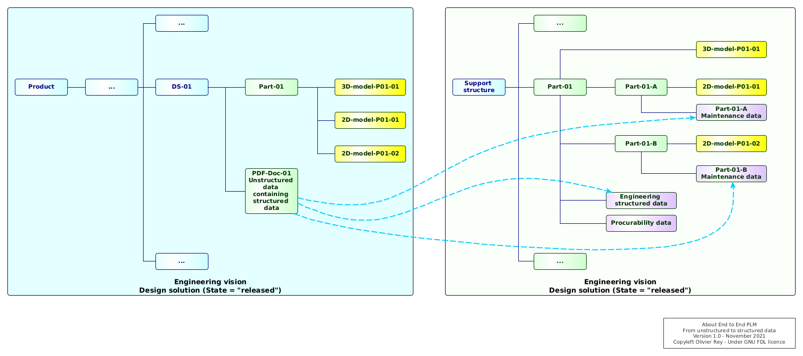

About End-To-End PLM#
As time goes on, the product lifecycle management (PLM) systems propose more and more functionality, linked together, in platforms that tend to be always bigger with time.
The increasing size of the PLM platforms, and their objective to take in charge more and more processes, is answering to a dream of many users to have "all data linked together in the same place". If this dream can be true for small products, it seems to us as a dangerous chimera in the case of complex manufacturing products such as aircrafts.
In this article, we will explain the core reasons why we don't believe that this model of the "unique backbone" is applicable everywhere. Indeed, when changing semantic domains, the data needs to be adapted, their lifecycle may change, and the timing of change may be different from one semantic universe to another.
When the tertiary sector takes as granted the adapter pattern (on which we will come back) for a long time, some PLM vendors are selling a model where the adapter can be reduced to links between data.
This article is explaining the reasons why, in complex cases, this simplistic approach may appear as very dangerous.
PLM, nature of data and adaptation#
We explained in a recent article what we consider as being the basic functions of a PLM. In that article, we showed that, data being represented as a graph, it appears as quite easy to interconnect whatever object of a certain type to whatever other object of any other type with an instance of a link type.
If we follow this statement, we quickly end up with the "no-limit approach" that could be be stated as follows: As long as data can be connected together, then we can manage them in the same software.
However, contrary to what could appear, this model of linking data together has its limits. Especially, in many cases, representing dependencies between business domains as links at the data level are a very bad representation of reality.
In order to understand correctly the problem, we first recommended to have a look at the real nature of data article. In this article, we explain that data are created by business processes and that the way they are structured is dependant on the business domain. When data must flow from a business domain to another business domain, it must be "adapted out" the source business domain (transformed and reduced to a format that will be understandable by both the initiator and the receiver). Then the receiver will "adapt the data in" its own business universe. Then the receiver will be able to use the data.
In our articles, we often name the business domains "semantic domains", because when we change a data from business domain, it is generally not meaning exactly the same thing, and it is often not structured in the same way.
For instance, if a "part" is created in the engineering semantic domain and sent to the support, this engineering part may be transformed into several "support parts" that will have support attributes and be localized at different use points. Concerning the engineering data attached to the part, most of them won't be useful for the support, even if they need to be secured in engineering system. For sure, the bridges between systems must ensure some traceability that enables to track back the same entity between systems. But that traceability requirement does not mean the data are "the same".
A sample: Data delivery from engineering to support#
Data in the real world are not perfect, especially in the industrial world. Moreover, they obey to the constraints of each category of users.
Let's take an example and examine the sample case of data delivery from engineering to support. As the word "delivery" indicates, we suppose that the engineering is doing a conscious act of delivery, which corresponds generally to a certain state of data, let's say "release".
For the sake of the sample, we will take an engineering delivery granularity that is not at part level but at design solution (DS) level, a design solution being a set of related parts answering to a certain function. When the engineering office works on a DS, this DS is "in work", and when the DS is validated, it is "released". In terms of configuration management, the design office will manage the applicability of the DS with the formalization of a set of products, identified by their serial number (S/N).
Let's take now, the support vision. Quite frequently, many engineering structured data are still located inside Office documents, and so, are not usable by software. If, at the support level, we want some MTBF data about a part, it is probable that we will have to open and read an Office document (that contains unstructured data) to create in my support application the structured data that is missing from the raw engineering delivery. This simple act represents an "adaptation" of the content of the DS in which we have the Office document.

Figure 1: Difference of vision between engineering and support
The Figure 1 shows several fundamental differences between the engineering vision and the support vision:
- The engineering vision is based on DS, while the support vision is part-based.
- The data found in the Office document enabled to fill some of the structured data in purple in the support area.
- The part
Part-01seen from the engineering is actually existing at two different use points in the support, with two different maintenance procedure attached. However, there is only one set of procurability and logistics data. - The bill of materials of the
DS-01is implicit for the engineering: it is the list of parts in the 3D model. For the support, we need an explicit list.
In this simplistic sample, we can see that for good reasons, the support will build a specific "view" based on engineering data. But the term "view" is misleading. Instead, we should use the term of "data model" and rephrase: the support will build a specific data model based on information coming from the engineering department.
When the DS-01 which is actually DS-01-V1, used on products in range [10, 100[, will evolve in DS-01-V2, used on products in range [101, 200[, the support may have to manage the "same parts" than in the first release of the DS, but in another context.
Reprendre ici
CM article link#
In a previous article about configuration management in PLMs, we explained
Remaining of a forum#
However, what does not convince me fully is that the OSLC approach is still at the data level. If this statement is true, if links can be done at the data level between various data models in various systems, then conceptually it pushes again for more monoliths (super PLMs that can manage several business domains).
Conceptually, the semantic web is using just a small subset of the possible distributed IT architectures by establishing a global data model that is spread amongst systems, but is still representing the reality under the form of a global data model.
The fact is the tertiary sector is not working on this paradigm: data are spread between systems but there are many places where data are transformed from one semantic domain to another one, with business rules, aka treatments, aka programs with functions. I try to introduce this concept here: https://orey.github.io/papers/articles/data-interop/
(following)
Coming from outside of the industry, I am very puzzled about this systematic belief that data can be linked, as if a unique semantic representation was possible.
In my article, I try to explain that modeling the reality can be done in many ways, and that the software industry (outside industry) proposed interchange standards that are enabling a program-based adaptation of data semantics between various business domains.
And, what is very surprising to me also is that, when we look carefully to the existing systems, they are full of business rules and data transformation anyway.
The first article on graph data in PLM is just an introduction which opens on another article on the structure of the bridges between systems. In a general way, those bridges, if they obey to the same rules as we can find in all the software industry - except industry - can embed some code to transform the semantics, so-called "adapters", that contain business rules.
Maybe industry is the exception that confirms the rule and links between systems can be reduced to the very simple case of "data links", but I fear this statement is too reductive.
(see message 3)
(message 3)
And it pushes for more monoliths and huge PLM platforms. I fear that this data-oriented approach will cause massive project failures in the future.
For me, this is also a core structural problem of the semantic web. If you think that the reality can be described by linked data only, you just consider a modeling that is static and structural, but you omit the dynamic transformations that are also part of the representation of reality. When we see the troubles of data reconciliation in the semantic web, it is for me the illustration that this approach is not sufficient.
Modeling the reality is a "domain-specific" activity and this is not because various domains can agree on an exchange protocol that their various semantics can be aggregated in a single model of linked data.
I intend to bring more arguments of this fact in my next article.
In all cases, it seems to me that this is a very interesting and crucial topic for the industry.
L'idée des ASD#
L'autre idée évidemment est que le PLM n'est plus générique mais complètement adapté à un business domain - d'où l'idée des ASD
This section will try to explain, in simple words, how the PLM plays a central role in the transformation of the aerospace industry in the last decades.
The legacy programs of the \ag, such as the A320, A330, H225, etc., were designed originally without 3D models\footnote{For the oldest programs, the drawings were made with paper and Chinese ink.}. Progressively, with the new workstations, appeared a generation of software enabling to do 3D design (also called CAD\footnote{Computer-Aided Design.}). The 3D design was a major step in the product design because it enabled to see the product and to work on parts assemblies in a more ergonomic and productive way.
In order to gather all the 3D models in a same place and to enable to load in a certain 3D environment\footnote{This practice is called design in context''. The designer will load a certain amount of parts that will create its 3D working environment. In that environment, the designer will be able to design the new or modified parts according to the requirements.}, newmanagement software'' appeared. The objective was to gather in the same place all documentation linked to parts or assemblies (the 3D models, the testing documents, material information, part number, etc.). Those software are generally called PDM\footnote{Part Data Management.}
With time, the PDM products proposed several features that turn them into PLM (product lifecycle management) systems (see Fig.~\ref{fig:plm-functions}):
\begin{itemize}
\itemsep0em
\item A management of a tree representing'' the product\footnote{For the recent programs, the tree is split conforming to the ATA chapters.} also called theproduct structure'';
\item A management of versions of parts and assemblies, linked to business objects called ''changes''\footnote{The changes enable to keep track of the modifications of the A/C and enable to justify to the authority the evolutions of a specific instance of A/C compared to the certified baseline A/C.};
\item A management of applicability that enables to filter out the product structure to create a list of all parts and assemblies applicable to a specific A/C serial number.
\end{itemize}
\imagepng{plm-functions}{The main features of a PLM}{0.7}
The core features of the Fig.~\ref{fig:plm-functions} are mostly centered on the product, \emph{seen from the engineering office}.
The Fig.~\ref{fig:hl01} shows the high level processes covered by the ``traditional'' PLM scope.
\imagepng{hl01}{High level view of the covered processes}{0.2}
With time, the PLM vendors added some modules to integrate their ``engineering PLM'' to other systems, in order to manage the lifecycle of the product, not only in the design office but also in the other divisions (manufacturing and support).
%==============SECTION \section{The integration of manufacturing engineering into the PLM}
The manufacturing engineering activities are the activities that design the manufacturing process. In a world where the product is the result of the assembly of subcomponents (such as MCAs and CA\footnote{Major Component Assembly and Component Assembly.}), the design of the manufacturing process is at the center of an OEM\footnote{Original Equipment Manufacturer.} productivity.
Specific products (such as Delmia) are proposing features to do process design. For sure, in order to design properly an assembly process, the software must use the exact list of parts to be assembled\footnote{Called the manufacturing Bill Of Materials'', ormBOM''.}. The link to the PLM is quite obvious: if the PLM could provide a way to export the BOM to the manufacturing engineering tool, there would be a ``digital continuity'' between the design office and the industry\footnote{Indeed, the process is a bit more complex than that because the engineering is creating the engineering BOM (or eBOM) that must be transformed in mBOM (the real BOM to be used). The mBOM is taking into account production constraints such as stocks.}.
The \ds\ \tdxp\ proposes a deep integration of the engineering PLM and of the manufacturing engineering environment. Using the 3D of the design office enables to design the plant work stations, to optimize the assembly procedures, to design new tools, etc. This coupling of the two worlds is a major evolution in the landscape of PLM\footnote{In the H160 PLM toolchain, \ah\ put in place an interface between CorePDM (a PTC Windchill-based PLM system) and \ds\ Delmia v5. This integration was complex and painful.}\footnote{Even if the integration between PLM and Delmia is deep in the \tdxp, the correct configuration of the bridges between the two worlds is not trivial.}.
\imagepng{hl02}{PLM scope with manufacturing engineering}{0.35}
The Fig.~\ref{fig:hl02} is showing the extension of PLM scope to manufacturing engineering\footnote{The manufacturing configuration is currently master in SAP, because only the ERP has the real vision of the available parts. For sure, the manufacturing configuration is managed inside the PLM (Delmia) because assembly operations are attached to parts of the mBOM.}.
%==============SECTION \section{Integrating the manufacturing execution into the PLM?}
The current process is as follows: the process that is designed in Delmia will go to SAP to be ``instantiated'' in the context of a specific instance of assembly. SAP has all the knowledge of the stocks, the workers and the real work stations (and their real availability). The core production process takes place in SAP.
\ds\ is proposing a software to manage the manufacturing execution on the shop floor (Apriso). This tool has several intentions: \begin{itemize} \itemsep0em \item Being able to provide to the blue collars a detailed documentation of the tasks to do (with potentially 3D models); \item Being able to provide a higher level of details of the tasks managed by SAP; \item Being able to capture measures in production through connected devices (like torque values with IoT keys). \end{itemize}
Even if \ds\ is working to integrate Apriso to the \tdxp, this integration is not easy because, traditionally, Apriso is integrated with SAP (even if the detailed documentation can come from Delmia\footnote{Which is the case for H160.}), so with the instance'' of process enabling to assemble a specific S/N and not with thetemplate'' of process (managed in Delmia).
\imagepng{hl03}{Integrating the manufacturing executing to the PLM}{0.5}
The Fig.~\ref{fig:hl03} shows the extension of the PLM scope to manufacturing execution.
%==============SECTION \section{Integrating the ILS into the PLM}
In CorePDM, \ah\ developed a specific module to manage the ILS into the H160 PLM. This integration is quite deep: it proposes an ILS tree with connections to the engineering product structure, and a mechanism to automatically identify the impact of an engineering change on the ILS tree.
\ds\ is also going in that direction, with a prototype of ILS integration\footnote{So-called S-View'' andS-BOM'' in the \ds\ language.} into the \tdxp, led with Safran Aircraft Engines\footnote{Logically, \ds\ is trying to leverage Delmia 3DX to adapt it to the ILS context.}.
\imagepng{hl04}{Integrating the ILS to the PLM}{0.65}
The Fig.~\ref{fig:hl04} shows the extension of the PLM scope to ILS.
%==============SECTION \section{Integrating the MBSE into the PLM}
When a product is being built, it obeys to a certain set of requirements. In the system engineering area, a standard process was defined to go from the requirements to the physical view: this process is called RFLP'', standing forrequirements, functional, logical, physical''. The objective of this process is to be able to create a digital link between the requirements and the design of the product. When this link is maintained over time, any modification on the product can be traced back to a certain requirement. This can be particularly useful for safety requirements, for instance, that should never be put at stake by a product modification.
Those methods are traditionally used in electronic and electrical systems, but, with time, they are being used more and more for other A/C systems\footnote{In \ah, the dynamic systems organization of the engineering office is studying to apply this methodology to safety requirements.}
\imagepng{hl05}{Integrating the MBSE into the PLM}{1.0}
If some \ds\ software already propose a partial implementation of the RFLP\footnote{In Catia v6 for mechanical engineering, for instance.}, specific tools are often used to run this process. Those tools propose ways to graphically model the various views leading to the physical view (2D or 3D). That is why this process is called MBSE'', standing forModel-Based System Engineering'', or more generally nowadays MBE'' forModel-Based Engineering''.
Software companies such as \ds\ try, progressively to integrate MBE tools into their suite of product\footnote{NoMagic company was acquired in 2017 by \ds\ to integrate their main product Cameo into the \tdxp.}. That extension is shown on Fig.~\ref{fig:hl05}.
%==============SECTION \section{The PLM, an ever-growing software product?}
Traditionally, interfaces between various software of the global ``product lifecycle'' process were difficult to set-up and to stabilize. \aca\ or \ah\ are not exceptions to this status.
Due to the difficulty of interoperability between products\footnote{Certain engineering data are not easy to transfer, for instance the 3D models. 3D files can be exchanged in STEP standardized formats but, in some cases, some data loss can occur in those exchanges.}, due also to a habit of undersizing the interface realization budget, and a habit of minimization of the complexity of the interfaces, the interfaces realization has often been a nightmare for business and IT teams.
This fact created a kind of belief that the interface between systems problem is disappearing if all the software are integrated into the same platform''. This platform will aggregate and integrate with time more and more processes and softwares in a kind ofever-growing end-to-end'' platform. This is the \ds\ approach, a ``everything in the same platform'' approach\footnote{For years, the same approach justified many custom developments into the SAP platform.}.
%==============SECTION \section{Coupling, urbanization and recurring costs}
On an enterprise architecture standpoint, integrating several products into the same platform can sometimes be a good idea, especially if the interfaces between systems are complex and both ways.
\imagepng{urba01}{Different software for different users versus platform}{0.6}
The fact is this approach generally brings many drawbacks (see Fig.~\ref{fig:urba01} for a graphical comparison of the two models):
\begin{itemize}
\itemsep0em
\item Integrating softwares into the same platform does not reduce the functional complexity of exchanges between areas'' in the same platform (see theinternal platform bridges'' in Fig.~\ref{fig:urba01});
\item The implementation of the platform is more complex than a double implementation of softwares, because the core model of the platform is more complex and more actors must be put around the table to find the right implementation options;
\item Making evolutions in a platform is generally more costly and more complex (touching one parameter in an area can have unexpected impacts in some other areas);
\item It creates couplings in terms of upgrade: everyone working on the same platform will have to cope with the new release of the platform \emph{at the same time}, whether the timing is relevant or not for the business.
\end{itemize}
We have to note that the everything in the same platform'' approach (so-calledmainframe approach'' or ``monolith approach'' in the IT world) is \emph{diametrically opposed} to the approach developed for decades in other businesses, especially in the services area (banking, insurance, travel, public services, etc.).
In those businesses, the \emph{urbanization} of the IT systems and the \emph{decoupling} of IT systems are fundamental preoccupations that can be summarized by the following interrogations: \begin{itemize} \itemsep0em \item In what software do we put what functionality for whom? \item What business processes should be optimized? \item Are there some areas of business still running with Excel only? What software could be deployed to integrate their processes to the other company processes? What kind of digital continuity is required? \item What are the relevant interfaces between systems? How to minimize them? How to make them reusable to avoid ``point-to-point'' interfaces? What middleware must we use? What governance to put in place for distributed systems? \item What systems should be split to increase business agility (a business will evolve independently from another)? \item What systems should be aggregated to increase company performance? \item What optimal systems map can lead to the best trade-off between agility and low IT recurring costs (RC)? \end{itemize}
Recurring costs is one of the most critical point. The services industry struggled to get out of the mainframes because they knew what constraints were bringing those approaches in terms of costs and couplings\footnote{In terms of commercial dependencies also: when all programs run running on IBM mainframes, IBM could increase its price without any organization to have the capability of negotiating.}: the bigger the system, the more expensive to evolve.
With integrated end to end platforms like \tdxp\footnote{Which might evolve to an integration of ERP, as \ds\ bought recently an ERP solution.}, the industrial world is taking \emph{another road} than the road of the service businesses, another road than the worldwide IT community that seeks for decades to get rid of monoliths\footnote{Since the 90s, the IT world is creating techniques to decouple the systems (distributed systems) and to professionalize their complex exchanges: middlewares, enterprise service bus (ESB), ETL, web services and APIs are part of this long term trend.}.
Note that getting rid of monoliths is \emph{not an IT objective}, but a way to ensure that the IT systems supporting the business will be able to evolve as fast as the competition.
As \tdx\ is concerned, the question is: what functional scope should be in the \tdxp\ and what should remain outside the platform? We provide first elements in the following section.
%==============SECTION \section{Enterprise architecture recommendations}
\subsection{The core strength of \tdx}
After manipulating the \tdx\ product, and after reading many documentations from \ds, being about the current product or the \tdx\ roadmaps, we consider that the \tdxp\ is very innovative and efficient in the digital management of the product line (with variants and options) in connection to the manufacturing engineering (scope already covered by Enovia 3DX and Delmia 3DX). A real integration effort has been realized by \ds\ and seems particularly adapted to the \ah\ industrial strategy of \emph{site specialization} and MCA/CA-based industry: The product enables to define MCAs with variants and options and one or several industrial models attached.
The \tdx\ seems particularly adapted to the H160 program, and to the H175 program, programs that are implementing a distributed industrial model.
%TODO Ajouter pour le programme 175 la mention aux partenaires cho=inois with a special study to be led for the partner management (Chinese and French partners).
\subsection{Investing on what works, investigating the rest} \label{corescope}
The EA recommendation is to create a formal distinction between what seems really usable and what is still under construction in the \tdx\ product. Currently, the scope that seems well taken in charge by the \tdx\ suite is the CAD (Catia 3DX), the product line, variants and options, the \cm\ and the change management (with Enovia 3DX) and the manufacturing engineering (with Delmia 3DX). For \ah, in a context where those products should be use as ``Out-Of-The-Box'' as possible, this scope seems the right scope to invest into.
Out of this core scope, \ah\ should, for sure, participate to the investigations (so-called ``incubators'') that are put in place at the \ag\ level, in the DDMS program.
\styledreco{core}
That means: Catia 3DX, Enovia 3DX (variant management, configuration management, change management) and Delmia 3DX\footnote{The support functions of \tdx\ (that could one day enable to decommission ILS H175) will not be ready before 2021 best case scenario.}.
The three business domains of the industry#
An industrial company is generally architectured on 3 business domains:
- Engineering Office: Where the products are designed, and certified in some industries;
- Industry: Where the products are built;
- Support: Where the products are supported.
Those three domains, while working on the same data, have very distinct constraints and their optimal interfacing is a the center of many problems and of many marketing speeches.